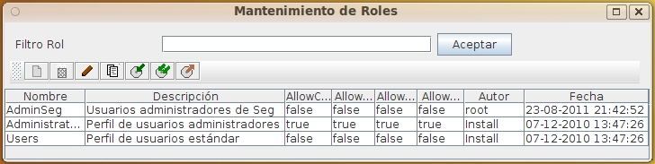

Lista Roles
Al seleccionar la opción de administrar Roles, aparecerá la pantalla de listado de Roles. Esta pantalla permite realizar el mantenimiento de todas las Roles del sistema.
El Rol permite configurar los permisos de un usuario para realizar actividades sobre tipos de elementos. Son permisos complementarios y adicionales a los ACL.
A los usuarios se les asigna una Rol, que indica qué tipo de operaciones puede realizar. Aunque estén autorizados a realizar esas operaciones, el acceso a cada elemento concreto depende del ACL del objeto.
Es decir, si un usuario no puede modificar grupos, no podrá siquiera intentar modificar uno. Si tiene permiso para modificar grupos, podrá modificar uno y no otros dependiendo del ACL concreto de cada grupo.
Esto permite distribuir el trabajo delegando tareas diferentes entre distintas personas de acuerdo a sus perfiles. Así, un usuario con conocimiento de gestión documental puede mantener las definiciones de los tipos documentales y otro usuario puede responsable de la seguridad puede mantener los usuarios y los grupos (o incluso un solo grupo) evitando colisiones.
A un usuario de consulta se le puede limitar todos los permisos para asegurar que errores en la definicion de ACL le concedan permisos no previstos
Los permisos incluidos en cada Rol son:
- AllowCreateUser: Permite crear un usuario pero no modificar los existentes
- AllowMaintainUser: Permite modificar y borrar los usuarios
- AllowCreateGroup: Permite crear un grupo pero no modificar los existentes
- AllowMaintainGroup: Permite modificar y borrar los grupos
- AllowCreateAcl: Permite crear un ACL pero no modificar los existentes
- AllowMaintainAcl: Permite modificar y borrar los ACL
- AllowCreateRole: Permite crear un rol pero no modificar los existentes
- AllowMaintainRole: Permite modificar y borrar los roles
- AllowCreateObject: Permite crear una definición de objeto pero no modificar los existentes
- AllowMaintainObject: Permite modificar y borrar las definiciones de objetos
- AllowCreateRepos: Permite crear un repositorio pero no modificar los existentes
- AllowMaintainRepos: Permite modificar y borrar los repositorios
- AllowCreateFolder: Permite crear una carpeta pero no modificar los existentes
- AllowMaintainFolder: Permite modificar y borrar las carpetas
- AllowCreateDoc: Permite crear un documento pero no modificar los existentes
- AllowMaintainDoc: Permite modificar y borrar los documentos
- AllowCreateMime: Permite crear un tipo mime pero no modificar los existentes
- AllowMaintainMime: Permite modificar y borrar los tipos mime
- AllowCreateAuth: Permite crear un sistema de autenticación pero no modificar los existentes
- AllowMaintainAuth: Permite modificar y borrar los sistemas de autenticación
- AllowCreateCustom: Permite crear una personalización usuario pero no modificar los existentes
- AllowMaintainCustom: Permite modificar y borrar las personalizaciones
Para filtrar el Rol o lista de Roles que se desea revisar, basta introducir parte del nombre en el cuadro de texto y pulsar el botón. La lista de Roles que cumplen las condiciones aparecerá en la tabla de resultados. Si se pulsa el botón sin introducir ningún valor se visualizará todos los elementos sobre los que tenga permiso el usuario. La tabla de resultados muestra los datos:
- Nombre identificativo
- Descripción del Rol
- Permisos asignados
- Nombre del último usuario que modificó el Rol
- Fecha y hora de la última modificación

Esa tabla de resultados puede ordenarse seleccionando la cabecera de cada columna. Puede también cambiarse el tamaño de cada columna arrastrando la línea separadora de las cabeceras
Sobre la tabla de resultados se dispone de varios botones que permiten realizar operaciones sobre el elemento seleccionado. Las operaciones disponibles son:
-
 Añadir un nuevo elemento
Añadir un nuevo elemento
- Eliminar el elemento seleccionado (Siempre que no se esté utilizando)
-
 Modificar el elemento seleccionado
Modificar el elemento seleccionado
-
 Crear un nuevo elemento como copia del elemento seleccionado
Crear un nuevo elemento como copia del elemento seleccionado
-
 Exportar el elemento seleccionado
Exportar el elemento seleccionado
-
 Exportar todos los elementos listados
Exportar todos los elementos listados
-
 Importar desde archivo uno o más elementos previamente guardados
Importar desde archivo uno o más elementos previamente guardados
- Exportar todos los elementos listados en formato CSV, para su importación en Hojas de Cálculo o BBDD
Debe tenerse en cuenta al exportar e importar que algunos elementos pueden tener dependencia de otros, por lo que debe exportarse todos los elementos relacionados y en el momento de importarse hacerlo en el orden adecuado
En caso de producirse un error (carencia de permisos del usuario, incoherencia de los datos, etc), la operación se cancela y se comunicará al usuario el motivo del error.
Ver: Mantenimiento Roles y Lista de Usuarios
Índice Ayuda OpenProdoc